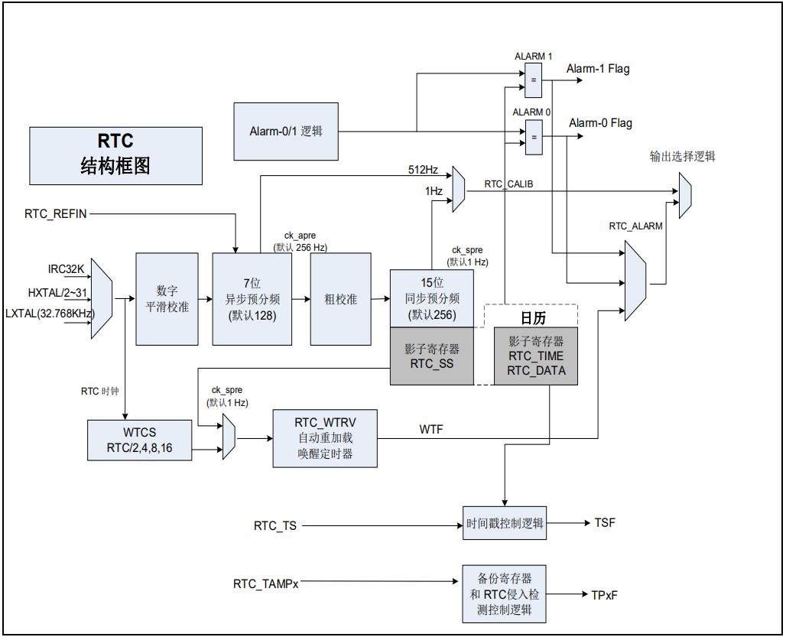
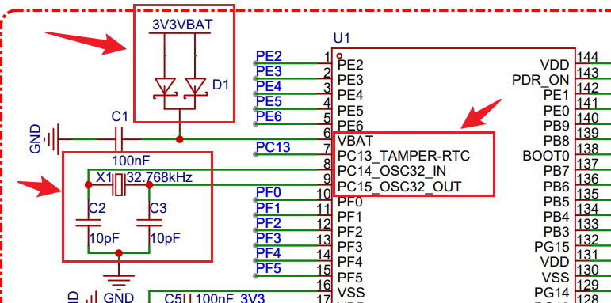
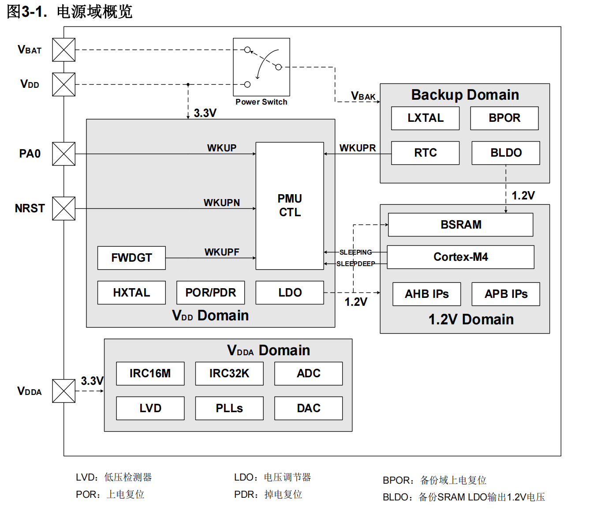
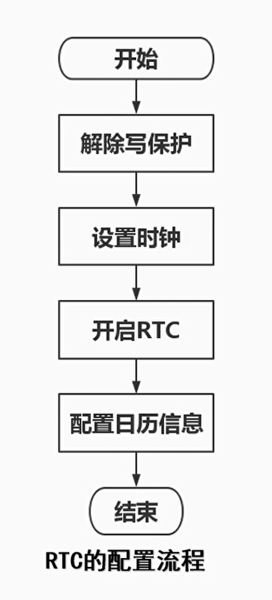
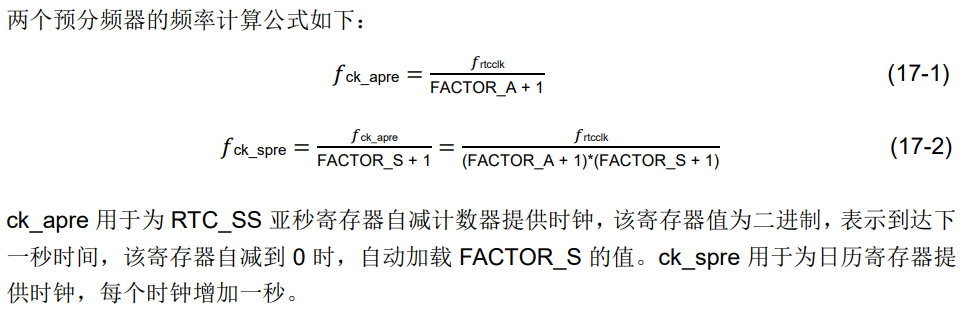

<!DOCTYPE lake>
<h2 data-lake-id="tQ2iz" id="tQ2iz"><span data-lake-id="u90fdb2b6" id="u90fdb2b6">学习目标</span></h2><ol list="u04811511"><li data-lake-id="ub570c557" fid="uc93d0a8e" id="ub570c557"><span data-lake-id="u9ab5b77d" id="u9ab5b77d">理解原理图RTC设计部分</span></li><li data-lake-id="uf28ec17a" fid="uc93d0a8e" id="uf28ec17a"><span data-lake-id="u590ed077" id="u590ed077">掌握初始化RTC</span></li><li data-lake-id="u9d1ff715" fid="uc93d0a8e" id="u9d1ff715"><span data-lake-id="u430753b4" id="u430753b4">掌握设置时间</span></li><li data-lake-id="u1079dd62" fid="uc93d0a8e" id="u1079dd62"><span data-lake-id="u738adbb7" id="u738adbb7">掌握读取时间</span></li></ol><h2 data-lake-id="FBEGA" id="FBEGA"><span data-lake-id="u6c31f689" id="u6c31f689">学习内容</span></h2><h3 data-lake-id="Oz6pZ" id="Oz6pZ"><span data-lake-id="u5848999d" id="u5848999d">RTC时钟介绍</span></h3><p data-lake-id="u797bec1b" id="u797bec1b" style="text-indent: 2em"><span data-lake-id="ub15bf6e9" id="ub15bf6e9">RTC是实时时钟(Real-Time Clock)的缩写。它是一种硬件模块或芯片,用于提供准确的日期和时间信息。</span></p><p data-lake-id="u04d98416" id="u04d98416" style="text-indent: 2em"><span data-lake-id="u84a64162" id="u84a64162">GD32F470上有RTC的外设,它提供了一个包含日期(年/月/日)和时间(时/分/秒/亚秒)的</span><span data-lake-id="ua8a95d63" id="ua8a95d63" style="color: #DF2A3F">日历</span><span data-lake-id="u3947ee4f" id="u3947ee4f">功能。除亚秒用二进制码显示外,时间和日期都以BCD码的形式显示。</span></p><p data-lake-id="u1f6123e5" id="u1f6123e5" style="text-indent: 2em"><span data-lake-id="u925731c9" id="u925731c9">RTC本质上就是一个1秒计数器,通过秒来换算出时间。因此需要我们提供一个1HZ频率的时钟。</span></p><h3 data-lake-id="fTY77" id="fTY77"><span data-lake-id="u59962843" id="u59962843">RTC结构框图</span></h3><p data-lake-id="uddb94e4e" id="uddb94e4e"></p><h3 data-lake-id="iJON2" id="iJON2"><br/></h3><h3 data-lake-id="NNCrA" id="NNCrA"><span data-lake-id="ue2addc1f" id="ue2addc1f">RTC原理图</span></h3><p data-lake-id="u4166ef58" id="u4166ef58"></p><h3 data-lake-id="qEfGs" id="qEfGs"><span data-lake-id="u4426720c" id="u4426720c">RTC时钟电源</span></h3><p data-lake-id="u2d6b1dfc" id="u2d6b1dfc" style="text-indent: 2em"><span data-lake-id="u90785aab" id="u90785aab">RTC时钟分为两个电源域。RTC的核心部分位于备份域中。系统复位或从待机模式唤醒时,RTC的设置和时间都保持不变。另一部分包括APB接口及一组控制寄存器位于VDD电源域中。</span></p><p data-lake-id="u33abdafb" id="u33abdafb"></p><h3 data-lake-id="ZdZLB" id="ZdZLB"><span data-lake-id="uec769e15" id="uec769e15">RTC的配置流程</span></h3><p data-lake-id="u07d2ad38" id="u07d2ad38"></p><h3 data-lake-id="nDVji" id="nDVji"><span data-lake-id="u873cbe24" id="u873cbe24">RTC时钟</span></h3><h4 data-lake-id="BxJYm" id="BxJYm"><span data-lake-id="u1db27fba" id="u1db27fba">开发流程</span></h4><ol list="u724c4bfe"><li data-lake-id="uc6cb3831" fid="u037c83bf" id="uc6cb3831"><span data-lake-id="ub43cf9a9" id="ub43cf9a9">加载依赖。</span><code data-lake-id="ua7fe1b30" id="ua7fe1b30"><span data-lake-id="ub7b813b3" id="ub7b813b3">gd32f4xx_rtc.c</span></code><span data-lake-id="ua2f56416" id="ua2f56416">,</span><code data-lake-id="udd6f25e4" id="udd6f25e4"><span data-lake-id="u9a628e45" id="u9a628e45">gd32f4xx_pmu.c</span></code></li><li data-lake-id="u0de6aa3c" fid="u037c83bf" id="u0de6aa3c"><span data-lake-id="u9974a76f" id="u9974a76f">初始化RTC。</span></li><li data-lake-id="udfc5912b" fid="u037c83bf" id="udfc5912b"><span data-lake-id="uaee77ae0" id="uaee77ae0">时钟配置。</span></li><li data-lake-id="ucfce5b15" fid="u037c83bf" id="ucfce5b15"><span data-lake-id="ue2c8bce5" id="ue2c8bce5">获取时钟。</span></li></ol><h4 data-lake-id="Qrfih" id="Qrfih"><span data-lake-id="u3105af36" id="u3105af36">RTC初始化</span></h4><span class="yuque-card-unsupported">[codeblock]</span><ul list="uf7543e75"><li data-lake-id="u1254f732" fid="u49f22aee" id="u1254f732"><span data-lake-id="ud9c1d399" id="ud9c1d399">RTC电源供应为外部独立电路，需要加载电源管理，打开rtc电源供应。</span></li><li data-lake-id="u01f9fdea" fid="u49f22aee" id="u01f9fdea"><span data-lake-id="udbcd1614" id="udbcd1614">RTC的时钟晶振为外部，需要加载外部晶振。</span></li><li data-lake-id="ueda4502e" fid="u49f22aee" id="ueda4502e"><span data-lake-id="u6acca8d0" id="u6acca8d0">加载完成过程，需要等待同步。</span></li></ul><h4 data-lake-id="rhL7T" id="rhL7T"><span data-lake-id="uc3ecf70d" id="uc3ecf70d">时钟配置</span></h4><span class="yuque-card-unsupported">[codeblock]</span><p data-lake-id="ua764ce33" id="ua764ce33"></p><p data-lake-id="ub611d0c8" id="ub611d0c8"><span data-lake-id="u76c46e20" id="u76c46e20">1 = 32.768k/(asyn + 1)/(syn + 1)</span></p><ul list="uda9324eb"><li data-lake-id="u4765d932" fid="u68c90a4b" id="u4765d932"><span data-lake-id="u8f1851f8" id="u8f1851f8">asyn取值范围为0到0x7F</span></li><li data-lake-id="u1ddbe22d" fid="u68c90a4b" id="u1ddbe22d"><span data-lake-id="uba7ab8a5" id="uba7ab8a5">syn取值范围为0到0x07FF</span></li></ul><h4 data-lake-id="YsGfY" id="YsGfY"><span data-lake-id="u400ecc05" id="u400ecc05">时钟获取</span></h4><span class="yuque-card-unsupported">[codeblock]</span><h4 data-lake-id="YGHft" id="YGHft"><span data-lake-id="ue6d8d9b9" id="ue6d8d9b9">BCD格式转化</span></h4><p data-lake-id="ub1e17c31" id="ub1e17c31"><span data-lake-id="u05ca81dd" id="u05ca81dd">BCD（Binary-Coded Decimal，二进制编码十进制）是一种用于表示十进制数字的二进制编码形式。在RTC（实时时钟）等应用中，BCD格式常用于存储和显示日期和时间信息。它的主要特点是每个十进制数位都被编码成4位二进制数。</span></p><p data-lake-id="ua023ef36" id="ua023ef36"><span data-lake-id="u41add1f9" id="u41add1f9">在BCD格式中，一个十进制数的每一位被表示为4位二进制数，其中每个二进制数位都对应一个十进制数位。例如：</span></p><ul list="u83910002"><li data-lake-id="u0ec21f4f" fid="ue1085381" id="u0ec21f4f"><span data-lake-id="ufa637751" id="ufa637751">十进制数 0 用BCD表示为 0000。</span></li><li data-lake-id="u888e5893" fid="ue1085381" id="u888e5893"><span data-lake-id="uc561e0f0" id="uc561e0f0">十进制数 1 用BCD表示为 0001。</span></li><li data-lake-id="u78fced20" fid="ue1085381" id="u78fced20"><span data-lake-id="ua257b7b2" id="ua257b7b2">十进制数 9 用BCD表示为 1001。</span></li></ul><p data-lake-id="uae2ab79f" id="uae2ab79f"><span data-lake-id="u5c9d94eb" id="u5c9d94eb">这样，一个BCD字节（8位）可以表示两个十进制数字。</span></p><span class="yuque-card-unsupported">[codeblock]</span><h4 data-lake-id="zivDv" id="zivDv"><span data-lake-id="u3998a0e3" id="u3998a0e3">完整代码</span></h4><span class="yuque-card-unsupported">[codeblock]</span><h3 data-lake-id="WxhDP" id="WxhDP"><span data-lake-id="ue02939aa" id="ue02939aa">RTC时钟备份寄存器</span></h3><p data-lake-id="u993f7be0" id="u993f7be0" style="text-indent: 2em"><span data-lake-id="u1bbce7a9" id="u1bbce7a9">RTC时钟有20个32位(共80字节)通用备份寄存器,能够在省电模式下保存数据。通过备份寄存器可以实现只配置一次时间即可。</span></p><span class="yuque-card-unsupported">[codeblock]</span><h2 data-lake-id="ylXHt" id="ylXHt"><span data-lake-id="u37460a3c" id="u37460a3c">练习题</span></h2><ol list="u71a831a0"><li data-lake-id="u2ad6753c" fid="ufdc8589f" id="u2ad6753c"><span data-lake-id="u4de02b0b" id="u4de02b0b">实现RTC时钟设置和获取</span></li></ol><p data-lake-id="u9b1dc352" id="u9b1dc352"><br/></p>